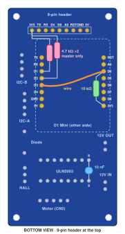

Fitting the Wemos D1 Mini and the two fixes the board needs. One board per character.
JLCPCB delivers the board with every part fitted except the D1 Mini. You fit the D1 Mini on plug-in headers, so you can take it out again later. Then you add two small fixes underneath that are missing from the PCB design. Allow about 15 minutes per board.
The D1 Mini sits with its components facing up. Its antenna end points to the 9-pin header, and its USB end points to the USB MICRO label. Then the PCB labels match the D1 Mini: RST…3V3 on the left, TX…5V on the right. The label says USB MICRO, but the USB-C version has the same pins and fits the same way.
Use the D1 Mini itself as a jig, so that both headers end up straight and the D1 Mini plugs in without force later.
The PCB connects the hall sensor to D3. On the ESP8266, D3 (GPIO0) decides how the chip boots. If the magnet happens to sit in front of the sensor at power-on, the module will not start. So the firmware reads the sensor on D0 instead, and D3 must not reach the D1 Mini.

| Wire | From D3 to D0. This sends the hall sensor to D0. |
| 10 kΩ | From D0 to 3V3, in the same row. D0 has no internal pull-up, so without it the sensor input floats. |
| 4.7 kΩ | From D1 (SCL) to the 3V3 pin of the 9-pin header. |
| 4.7 kΩ | From D2 (SDA) to the same 3V3 pin. These are the I2C pull-ups for the whole display. |
| Reset button optional | Between RST and GND of the 9-pin header. You can also plug a 2-pin Dupont lead into the header from the top instead of soldering. |
Write MASTER on the master board. The last page explains why each fix is needed.
Keep the D1 Mini unplugged. Look for solder bridges between neighbouring pins under a bright light first, then measure:
| Measure between | Expected | If not |
|---|---|---|
| D3 and D0 | Beeps (0 Ω) | Redo the wire |
| D0 and 3V3 | About 10 kΩ | Check the 10 kΩ joints and the colour code |
| 5V and GND (9-pin header) | No beep | Look for a bridge, often next to the GND pins |
| 12V IN, pin to pin | No beep | Look for a bridge on the 12 V connectors |
| Master: D1 and 3V3, D2 and 3V3 | About 4.7 kΩ each | Check the 4.7 kΩ joints |
Plug the D1 Mini back in: antenna toward the 9-pin header, USB end toward USB MICRO (Figures 2 and 3). The D3 socket stays empty. The board is ready. Flash the firmware over USB with pio run -t upload and pio run -t uploadfs.
The PCB is built exactly as designed, and the design is missing three things. The README's Building Notes mentions them in one short paragraph, but they were never added to the schematic or the PCB.
The PCB connects the sensor to D3, which is GPIO0 on the ESP8266. At power-on the chip reads GPIO0 to decide how to boot: if it is low, the chip waits for new firmware instead of starting. The sensor pulls its line low whenever the magnet is in front of it. So a module whose drum happened to stop there would not start. D0 plays no part in booting, and the firmware reads the sensor on D0 (include/Config.h). That is why the D3 pin is cut and the wire goes from D3 to D0.
The diode on the PCB keeps the sensor's 5 V away from the 3.3 V input, so the sensor can only pull the line low. Without a magnet, nothing pulls the line high, and the input floats and gives random readings. Most ESP8266 pins have a built-in pull-up resistor that the firmware switches on, but D0 does not have one. The 10 kΩ resistor to 3V3 does that job.
All modules share one I2C bus. Each module can only pull SDA and SCL low, and resistors pull them back high. One pair is enough for the whole display. The other modules switch their built-in pull-ups off in slave mode (src/main.cpp), so the pull-ups sit on the master. The built-in ones are tens of kΩ, too weak for a bus that runs through ten modules and their cables, so the master gets 4.7 kΩ resistors.
Pin positions in Figure 6 come from pcb/PCB_PCB_SplitFlap_2023-06-04.json. Source of this guide: guides/src/soldering/.